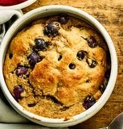

Baked Oats
Enjoy baked oats for breakfast with bananas, mixed spice and your choice of chocolate chips, blueberries or raspberries. Serve warm with more fruit to make it extra-special
Prep Time: 5 mins
Cook Time: 25 mins
Serves 4
Ingredients
- 100g porridge oats
- 1 tsp baking powder
- 1 banana, peeled and chopped
- 1 tbsp maple syrup or honey
- 2 eggs
- pinch of mixed spice or ground cinnamon
- 100g chocolate chips, blueberries or raspberries, plus extra to serve
- flavourless oil, for the ramekins
Method
- Heat the oven to 180C/160C fan/gas 4. Put the oats in a blender and pulse a few times until they start to resemble flour.
- Add the baking powder, chopped banana, maple syrup or honey, eggs and mixed spice or cinnamon to the blender, and whizz until smooth.
- Stir in the chocolate chips or berries.
- Lightly oil four heatproof ramekins, then divide the batter between them.
- Bake for 20-25 mins, or until well-risen and the baked oats spring back when lightly pressed.
- Step 6 Scatter with more chocolate chips or berries before serving, if you like.
Nutritional Information: per serving
- Calories: 300 kcal
- Fat: 12g
- Saturated Fats: 6g
- Carbohydrates: 38g
- Sugars: 20g
- Fibre: 3g
- Protein: 8g
- Salt: 0.5g